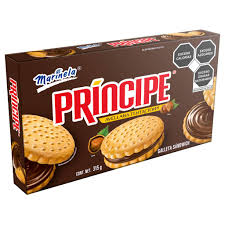
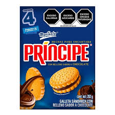
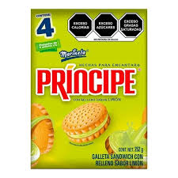

sopa/



top de mis galletas principe
ARTISTA DE NEW JENS siendo la segunda mayor del grupo, vocalista, rapera y bailarina principal del grupo con 19 años, siendo reconocia por sus canciones viene de la empresa hybe y cuentan con canciones movidas y bailes frescos ya que implican movimiento
más conocida como Jihyo, es una cantautora, modelo y bailarina surcoreana. En 2015, participó en el programa Sixteen, donde compitió para formar parte de Twice. Debutó como integrante y líder del grupo en el mismo año, bajo JYP Entertainment, muchos críticos describen la voz de Jihyo como «fuerte y suave», y también enfatizan que «siempre canta con su alma.» Ella es considerada una de las mejores vocalistas de la tercera generación de idols.
Kim Hyung-seo (en hangul, 김형서; Ulsan, Corea del Sur, 27 de septiembre de 1998), conocida como BIBI (비비; estilizado en mayúsculas), es una cantautora surcoreana. En 2017 firmó un contrato con la discográfica Feel Ghood Music después de que la rapera Yoon Mi-rae encontró algunas de sus canciones en Soundcloud, Profesión: Cantante, Rapera, Compositora y Actriz Fecha de nacimiento: 27-Septiembre-1998 (25 Años) Lugar de nacimiento: Ulsan, Corea del Sur. Estatura: 168 cm Peso: 48 kg Tipo de sangre: A Signo zodiacal: Libra Signo zodiacal chino: Tigre Familia: Padres y hermana menor (Kim Na Kyoung) Agencia: FEELGHOOD Music (Corea del Sur) 88Rising (Estados Unidos)